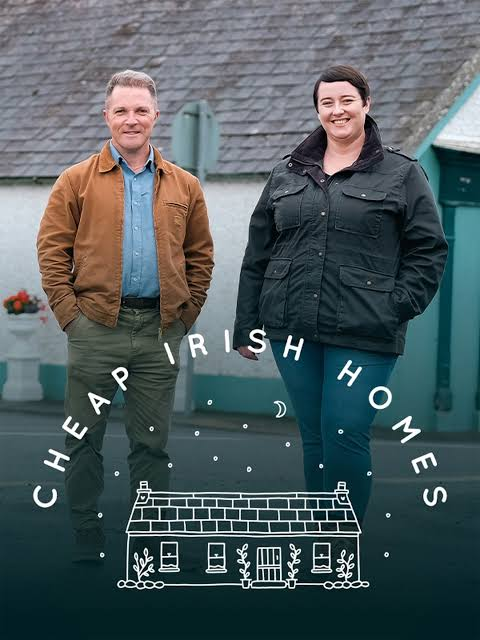
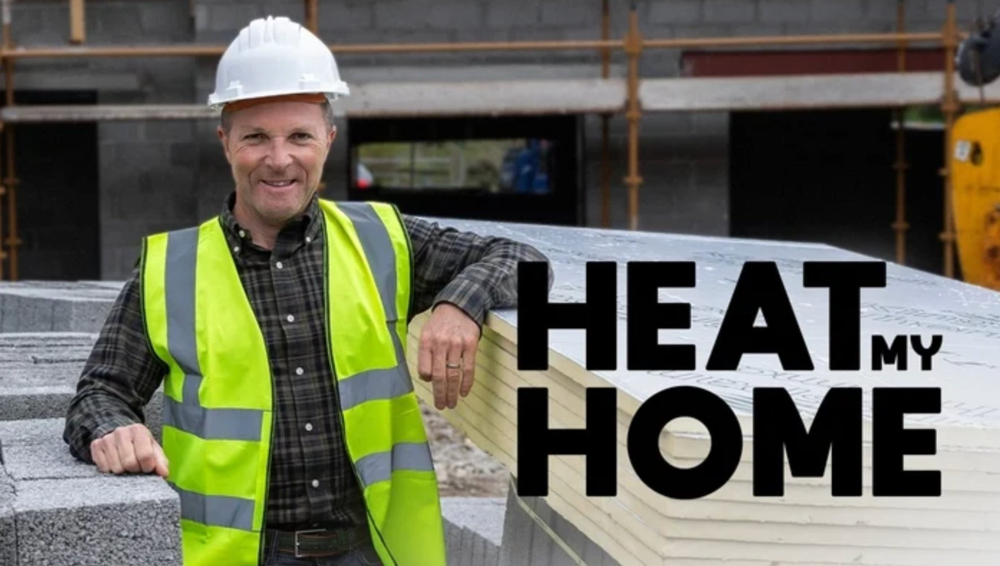
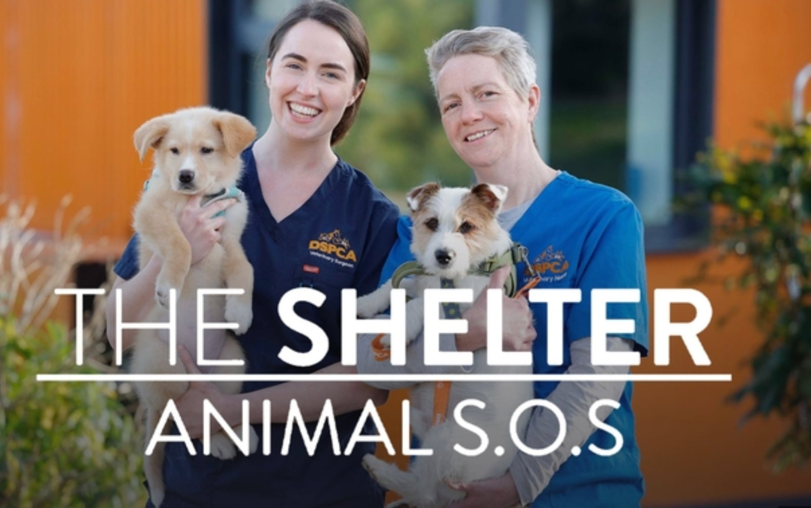
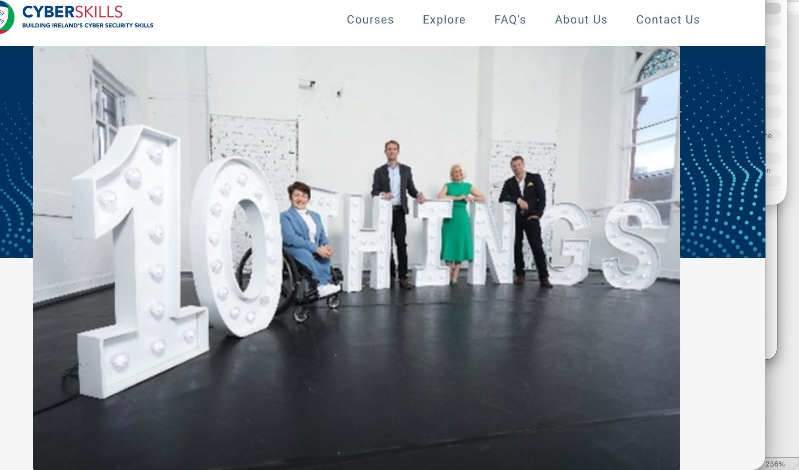
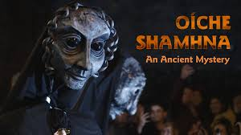
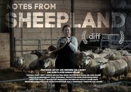
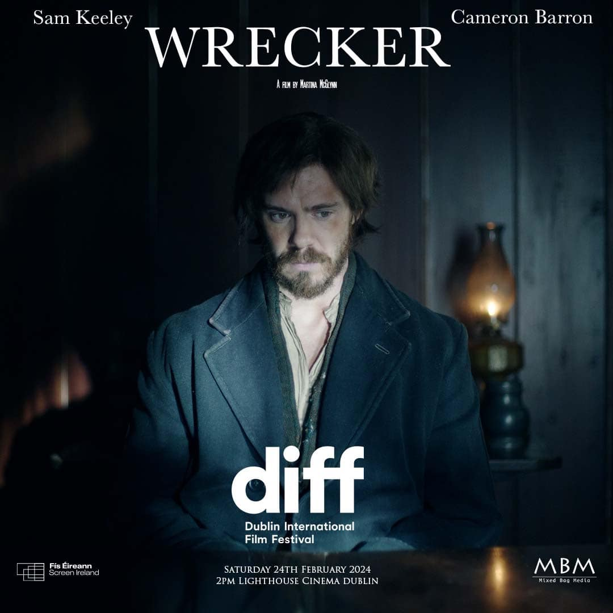
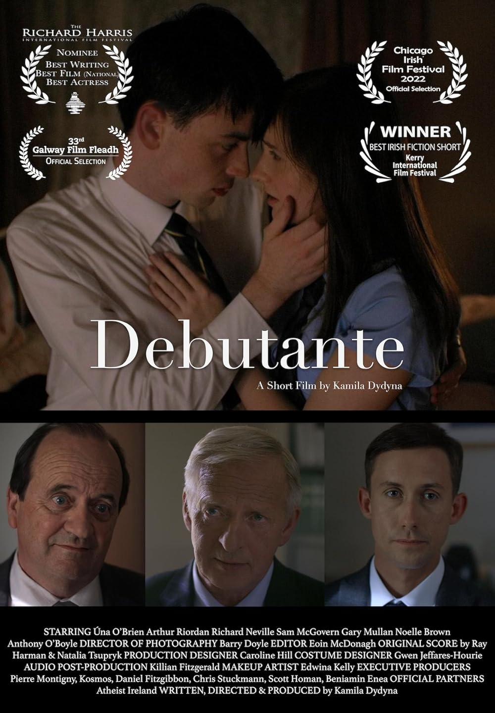
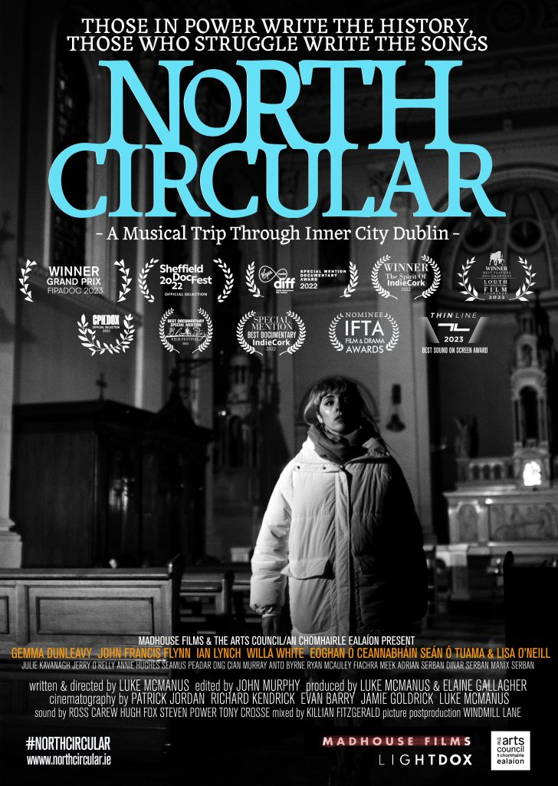

Selected Work
Recent & Notable Credits
Recent Productions
The Wanted Man
ADR · Apple TV+

Cheap Irish Homes
Cheap European Homes

Heat My Home

The Shelter

10 Things to Know

Halloween: An Ancient Mystery

Notes From Sheepland

Wrecker
Underground Cinema Award - Best Sound

Debutante
Fastnet Film Festival - Best Sound

North Circular
Denton Thin Line Festival - Best Sound on Screen
Selected Earlier Work

Pearl Harbor: Heroes Who Fought Back
IFTA Winner - Best Sound

The Lodgers

Michael Inside

Sacred Sites of the World

Crash and Burn

Breathe
Full credits on IMDB ↗